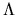
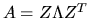

Next: Nonsymmetric Eigenproblems
Up: Computational Routines
Previous: Generalized RQ Factorization
Contents
Index
Symmetric Eigenproblems
Let A be a real symmetric or
complex Hermitian n-by-n matrix.
A scalar  is called an eigenvalue and a nonzero column vector
z the corresponding eigenvector if
.
is
always real when A is real symmetric or complex Hermitian.
is called an eigenvalue and a nonzero column vector
z the corresponding eigenvector if
.
is
always real when A is real symmetric or complex Hermitian.
The basic task of the symmetric eigenproblem routines is to compute values of
and, optionally, corresponding vectors z for a given matrix A.
This computation proceeds in the following stages:
- 1.
- The real symmetric or complex Hermitian matrix A is reduced to
real tridiagonal form
T.
If A is real symmetric this decomposition is A=QTQT with Q orthogonal
and T symmetric tridiagonal.
If A is complex Hermitian, the
decomposition is A=QTQH with Q unitary and T, as before,
real symmetric tridiagonal.
- 2.
- Eigenvalues and eigenvectors of the real symmetric tridiagonal matrix
T are computed.
If all eigenvalues and eigenvectors are computed, this is equivalent to
factorizing T as
,
where S is orthogonal and 
is diagonal.
The diagonal entries of
are the eigenvalues of T, which are also
the eigenvalues of A, and the
columns of S are the eigenvectors of T; the eigenvectors of A are
the columns of Z=QS, so that

(
when
A is complex Hermitian).
In the real case, the decomposition A = Q T QT is computed by one
of the routines xSYTRD, xSPTRD, or xSBTRD,
depending on how the matrix is
stored (see Table 2.10). The complex analogues of these routines
are called xHETRD, xHPTRD, and xHBTRD.
The routine xSYTRD (or xHETRD) represents the
matrix Q as a product of elementary reflectors,
as described in section 5.4.
The routine xORGTR (or in the complex case xUNMTR) is
provided to form Q explicitly;
this is needed in particular
before calling xSTEQR to compute all the eigenvectors of A
by the QR algorithm.
The routine xORMTR (or in the complex case xUNMTR)
is provided to multiply another matrix by Q
without forming Q explicitly; this can be used to transform
eigenvectors of T computed by xSTEIN, back to eigenvectors of A.
When packed storage is used, the corresponding routines for forming Q
or multiplying another matrix by Q are xOPGTR and xOPMTR
(in the complex case, xUPGTR and xUPMTR).
When A is banded and xSBTRD (or xHBTRD)
is used to reduce it to
tridiagonal form, Q is determined as a product of Givens rotations, not
as a product of elementary reflectors; if Q is required, it must be formed
explicitly by the reduction routine.
xSBTRD is based on the vectorizable algorithm due to Kaufman [77].
There are several routines for computing eigenvalues and eigenvectors of T,
to cover the cases of computing some or all of the eigenvalues, and some or
all of the eigenvectors. In addition, some routines run faster in some
computing environments or for some matrices than for others. Also,
some routines are more accurate than other routines.
See section 2.3.4.1 for a discussion.
- xSTEQR
-
This routine uses the implicitly shifted QR algorithm.
It switches between the QR and QL variants in order to
handle graded matrices more effectively than the simple QL variant that
is provided by the EISPACK routines IMTQL1 and IMTQL2. See
[56] for details.
This routine is used by drivers with names ending in -EV and -EVX to compute
all the eigenvalues and eigenvectors (see section 2.3.4.1).
- xSTERF
-
This routine uses a square-root free version of the QR
algorithm, also switching between QR and QL variants, and can only
compute all the eigenvalues. See [56] for details.
This routine is used by drivers with names ending in -EV and -EVX to compute
all the eigenvalues and no eigenvectors (see section 2.3.4.1).
- xSTEDC
-
This routine uses Cuppen's divide and conquer algorithm
to find the eigenvalues and the eigenvectors (if only eigenvalues
are desired, xSTEDC calls xSTERF). xSTEDC can be many times faster than
xSTEQR for large matrices but needs more work space (2n2 or 3n2).
See [20,57,89] and section 3.4.3
for details.
This routine is used by drivers with names ending in -EVD to compute all the
eigenvalues and eigenvectors (see section 2.3.4.1).
- xSTEGR
-
This routine uses the relatively robust representation (RRR) algorithm to
find eigenvalues and eigenvectors. This routine uses an LDLT factorization
of a number of translates T - sI of T, for one shift s near each cluster
of eigenvalues. For each translate the algorithm computes very accurate
eigenpairs for the tiny eigenvalues. xSTEGR is faster than all the
other routines except in a few cases, and uses the least workspace.
See [35] and section 3.4.3 for details.
- xPTEQR
-
This routine applies to symmetric positive definite
tridiagonal
matrices only. It uses a combination of Cholesky factorization
and bidiagonal QR iteration
(see xBDSQR) and may be significantly more accurate than the other routines
except xSTEGR.
See [14,32,23,51]
for details.
- xSTEBZ
-
This routine uses bisection to compute some or all of the
eigenvalues. Options provide for computing all the eigenvalues in a real
interval or all the eigenvalues
from the ith to the jth largest.
It can be highly accurate, but may be adjusted to run faster if lower
accuracy is acceptable.
This routine is used by drivers with names ending in -EVX.
- xSTEIN
-
Given accurate eigenvalues, this routine uses inverse
iteration to compute some or all of the eigenvectors.
This routine is used by drivers with names ending in -EVX.
See Table 2.10.
Table 2.10:
Computational routines for the symmetric eigenproblem
| Type of matrix |
Operation |
Single precision |
Double precision |
| and storage scheme |
|
real |
complex |
real |
complex |
| dense symmetric |
tridiagonal reduction |
SSYTRD |
CHETRD |
DSYTRD |
ZHETRD |
| (or Hermitian) |
|
|
|
|
|
| packed symmetric |
tridiagonal reduction |
SSPTRD |
CHPTRD |
DSPTRD |
ZHPTRD |
| (or Hermitian) |
|
|
|
|
|
| band symmetric |
tridiagonal reduction |
SSBTRD |
CHBTRD |
DSBTRD |
ZHBTRD |
| (or Hermitian) |
|
|
|
|
|
| orthogonal/unitary |
generate matrix after |
SORGTR |
CUNGTR |
DORGTR |
ZUNGTR |
| |
reduction by xSYTRD |
|
|
|
|
| |
multiply matrix after |
SORMTR |
CUNMTR |
DORMTR |
ZUNMTR |
| |
reduction by xSYTRD |
|
|
|
|
| orthogonal/unitary |
generate matrix after |
SOPGTR |
CUPGTR |
DOPGTR |
ZUPGTR |
| (packed storage) |
reduction by xSPTRD |
|
|
|
|
| |
multiply matrix after |
SOPMTR |
CUPMTR |
DOPMTR |
ZUPMTR |
| |
reduction by xSPTRD |
|
|
|
|
| symmetric |
eigenvalues/ |
SSTEQR |
CSTEQR |
DSTEQR |
ZSTEQR |
| tridiagonal |
eigenvectors via QR |
|
|
|
|
| |
eigenvalues only |
SSTERF |
|
DSTERF |
|
| |
via root-free QR |
|
|
|
|
| |
eigenvalues/ |
SSTEDC |
CSTEDC |
DSTEDC |
ZSTEDC |
| |
eigenvectors via |
|
|
|
|
| |
divide and conquer |
|
|
|
|
| |
eigenvalues/ |
SSTEGR |
CSTEGR |
DSTEGR |
ZSTEGR |
| |
eigenvectors via |
|
|
|
|
| |
RRR |
|
|
|
|
| |
eigenvalues only |
SSTEBZ |
|
DSTEBZ |
|
| |
via bisection |
|
|
|
|
| |
eigenvectors by |
SSTEIN |
CSTEIN |
DSTEIN |
ZSTEIN |
| |
inverse iteration |
|
|
|
|
| symmetric |
eigenvalues/ |
SPTEQR |
CPTEQR |
DPTEQR |
ZPTEQR |
| tridiagonal |
eigenvectors |
|
|
|
|
| positive definite |
|
|
|
|
|
Next: Nonsymmetric Eigenproblems
Up: Computational Routines
Previous: Generalized RQ Factorization
Contents
Index
Susan Blackford
1999-10-01